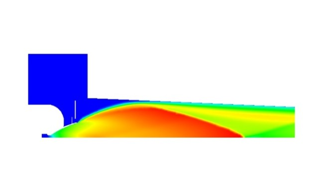
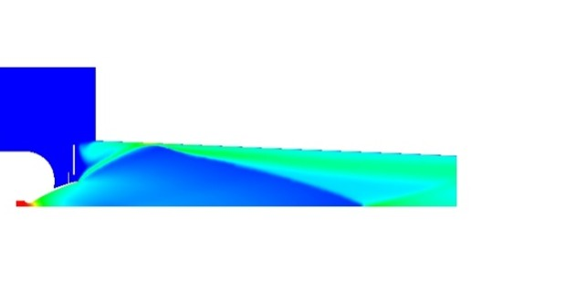

PROJECT
Thruster Hot-Gas Blowback Risk Assessment

Direction Générale de l'Armement (DGA)| Saint-Médard-en-Jalles, France | Summer internship (2021)

alt="Mach number contour">Project Overview
Three-month internship studying the risk of hot-gas blowback for a thruster in altitude-simulation conditions. Set up and ran CFD simulations to characterize a representative thruster's behavior across its full operating pressure range, compared the behavior of two different thruster designs across two pressure ranges, and carried out a mesh-convergence study to confirm the reliability of the results. Findings fed into recommendations for avoiding hot-gas return on a future thruster demonstrator.
